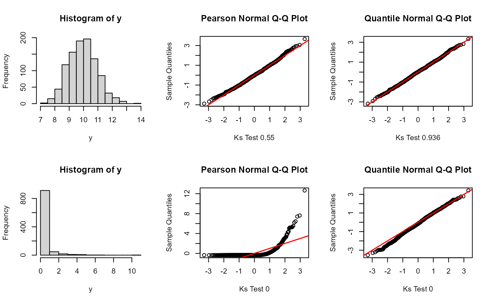

Figure and Table Placeholders
TMB-validation-tables-figures.RmdMethods

Bottom left: An observation, y, plotted against its distribution, Gamma(alpha = 1, beta = 2). Top left: The cdf value of the observation y given the distribution parameters. Top right: The same cdf value plotted on a standard normal cdf curve. Bottom right: The inverse cdf of the value is plotted on a standard normal distribution.

Overview of Simulation Study. Data were first simulated under the Operating, or True Model. Data were then fit to two separate models: the same operating model and the mis-specified model. For each model fit, quantile residuals and subsequent GOF p-values were calculated for each method. This simulation was repeated 500 times and resulted in a distribution of p-values for each method under the correct and mis-specified model.
## Warning in ks.test(pear.res, "pnorm"): ties should not be present for the
## Kolmogorov-Smirnov test
## Warning in ks.test(r8.pears, "pnorm"): ties should not be present for the
## Kolmogorov-Smirnov test

Given zero-centered multivariate data with a covariance matrix, Sigma. Pairs plo=ts visualize the correlation structure of the data. Blue and red indicate points tracked in transformation. The red points correspond with the marginal percentile in the histogram.

When observations are scaled to a unit variance, data are transformed to standardized normal space, yet correlation structure is retained.

In order to properly decorrelate the data, we need to apply a decoorelation method, such as the cholesky transformation. In this approach, we calculate the cholesky decomposition of the covariance matrix, Sigma, with which we use to transform the data to iid standardized normal space via both a scaling and a rotaion.
Results
Simple Linear Model
Simple Linear Model. Type I error rates and Power evaluated for each analytical and simulation method. Results are partitioned out by residual type (top to bottom).
Simple Mixed Model

Simple Mixed Model. Type I error rates and Power evaluated for each analytical and simulation method. Results are partitioned out by model mis-specification (from left to right) and residual type (top to bottom).
Simple Linear Mixed Model, mispecification = missing normally distributed coviariate. Type I Error rates for different quantile residual methods as within group sample size increases, number of groups fixed at 4. Take home: Rotated ecdf method has high Type I Error rate when within group sample sizes are high while unroated residuals maintain a low Type I Error rate.

Simple Linear Mixed Model, mispecification = missing normally distributed coviariate. Power to detect mis-specification for different quantile residual methods as within group sample size increases, number of groups fixed at 4. Take home: The unrotated ecdf method applied to unconditional residuals has low power to detect mis-specification.

Simple Linear Mixed Model, mispecification = missing normally distributed coviariate. Type I Error rates for different quantile residual methods as betweem group sample size increases, number of observations within groups fixed at 8. Take home: Results same as above with varying within group sample size.
Simple Linear Mixed Model, mispecification = missing normally distributed coviariate. Power to detect mis-specification for different quantile residual methods as betweem group sample size increases, number of observations within groups fixed at 8. Take home: Results same as above with varying within group sample size.
Randomwalk

Randomwalk. Distribution of theoretical p-values under the correct model evaluated for each analytical method when true parameters are known. Take home: all return approx uniform p-value distributions, including Pearson.

Randomwalk. Distribution of estimated p-values evaluated for each analytical method when parameters are estimated under the correct (top) and mis-specified (bottom) models. Take home: Pearson rejects the correct model more than expected, MCMC fails to detect mis-specification.

Randomwalk. Distribution of theoretical p-values under the correct model evaluated for each simulation-based method when true parameters are known. Take home: unconditional ecdf needs to be rotated but rotation does not matter when conditioning on random effects.

Randomwalk. Distribution of estimated p-values evaluated for each analytical method when parameters are estimated under the correct (top) and mis-specified (bottom) models. Take home: unconditional ecdf needs to be rotated but rotation does not matter when conditioning on random effects. Conditioning on estimated random effects results in rejecting the model more often than expected, regardless of rotation.